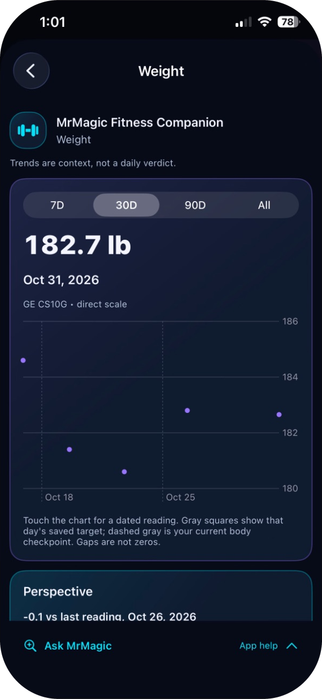
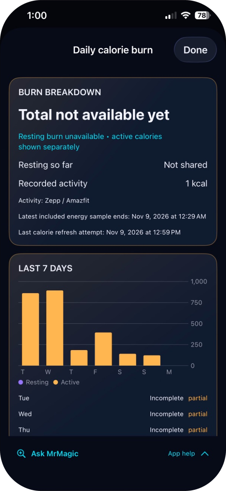

Recorded checks passed for navigation, missing/loading/unavailable information and very large text at one computer-tested screen width.
MRMAGIC SUITE · iPHONE
Magic’s Fitness Companion
Every rep, reading and goal in one place.
A personal iPhone app bringing workouts, activity, body trends, goals and nutrition together, with Ask MrMagic help built in.
VERIFIED MILESTONE · NOVEMBER 10, 2026
MrMagic Fitness successfully installed and launched on two iPhones through Apple TestFlight — November 10, 2026.
Invitation-only beta. Apple Health and Bluetooth device integrations are turned off in this beta. Not released on the App Store.
- Status
- PERSONAL USE · INSTALLED ON MY iPHONE
- Installed version
- 1.7.1 build 33 · owner-accepted 9 November 2026
- Ask MrMagic
- Local app help · no health records read
- TestFlight beta
- Installed and launched on two iPhones · 10 November 2026
- Beta scope
- Apple Health and Bluetooth devices off · not on the App Store
Plan and log workouts
Familiar workouts and dated sets, kept with your history.
See body trends
Weight and scale history over time, with gaps shown honestly.
Goals and nutrition
Protein and goals beside your progress.
Ask MrMagic, built in
Ask how to use any screen. Answers come from the app’s own guide on the iPhone; no health records are read and no question leaves the device.
Development status
Formerly Formula None Fitness. The project history continues under the MrMagic Suite identity.
Magic’s Fitness Companion is a personal-use application. A small invitation-only beta, MrMagic Fitness, is distributed through Apple TestFlight; it is not released on the App Store. This website shares the project story and reviewed documentation.
A personal iPhone fitness project bringing workouts, activity, body trends, goals and nutrition together—and investigating the consumer devices behind the data.
Part of MrMagic Suite · one assistant across the suite is planned ↗
What works now and what is next: Version 1.7.1, build 33, was installed as an in-place update on my everyday iPhone and accepted after hands-on checks on 9 November 2026. Existing records and settings were preserved. A separate MrMagic Fitness beta was then distributed through Apple TestFlight: MrMagic Fitness successfully installed and launched on two iPhones through Apple TestFlight — November 10, 2026. Apple Health and Bluetooth device integrations are turned off in that beta, and its features beyond installation and launch are not claimed here. Full accessibility, scale and watch checks remain incomplete. This app is for personal use. Read the installation milestone ↗
MRMAGIC FITNESS · BETA WAITLIST
Request beta access.
MrMagic Fitness is a small, invitation-only iPhone beta distributed through Apple TestFlight. It has been installed and launched on two iPhones so far. A waitlist will let you register interest in a future place.
- Beta emails only. You’ll hear about the Fitness beta: whether a place is available and how to join.
- No general newsletter. Joining the waitlist does not subscribe you to Project Updates. That remains a separate choice.
- No guarantee. Places are limited. TestFlight invitations are sent personally by Daniel.
- Your choice. Email confirmation is required, and every email includes an unsubscribe link.
- What the beta includes. Manual logging works on the iPhone; Apple Health and Bluetooth device integrations are turned off. Read the MrMagic Fitness Beta privacy policy.
A PERSONAL REASON TO BUILD
More than 60 pounds lost.
I’m proud to have lost more than 60 pounds. Fitness Companion is my personal project for making training and health information useful along that journey.
My own reported achievement—not a claim that this application caused the weight loss.
ACTUAL iPHONE / PERSONAL 1.7.1 BUILD 33
The app on
my iPhone.
Three genuine views captured on 9 November 2026. These are framed Mirroring viewports; more content continues below the docked app-help bar. They are not Beta or TestFlight screenshots.
Today · dated readings
Personal app 1.7.1 build 33, captured 9 November through iPhone Mirroring. The latest displayed weight is dated 31 October, not a new 9 November reading. Energy is incomplete. Owner-approved real values; exterior framing removed, app pixels unchanged.
SELECT TO ENLARGE ↗
Weight · 30-day view
A 30-day view of sparse historical observations. Latest displayed reading: 31 October 2026. Gaps are not zeros or daily measurements; no health outcome is inferred. Real personal build 33 iPhone Mirroring viewport, captured 9 November.
SELECT TO ENLARGE ↗
Activity · partial energy
Recorded activity, not total daily burn. The view explicitly says total and resting burn are unavailable; the recorded activity is 1 kcal with partial coverage. Captured 9 November on personal build 33; no live wearable-sync or calorie-accuracy claim.
SELECT TO ENLARGE ↗Owner-approved personal measurements are shown only in these selected screenshots. Earlier captures and originals remain preserved privately.
HISTORICAL / DESIGN AND SIMULATOR
Earlier design.
Earlier Simulator test.
Historical development comparison. The 168.4 lb values below are fictional earlier-work data, not the latest installed-phone view above.


The working dashboard follows the approved colors and layout, with adjustments for an iPhone interface. Today, Plan, Activity, Protein and More remain available. The other Fusion screens are still design concepts. Build 33 has since passed an in-place iPhone installation and the owner’s focused checks. The images above remain earlier computer-test evidence.
The report lists 139 passing portable checks plus 17 scale-core cases. These are project records, not tests rerun by this website.
A workout-count test already failed before this change and still fails. The full application and real equipment have not passed all checks.
That earlier computer-test report noted scrolling beneath a transparent status area and limits to its device coverage. Build 33’s focused phone checks do not replace full accessibility or sheet-by-sheet validation.
ENGINEERING CASE STUDIES
Connecting hardware
means preserving meaning.
CASE 01 / SMART SCALE
A GE CS10G scale,
on the app’s terms.
BLE captureDecodeReviewLocal save
Experimental device integrationCode connects to one GE CS10G scale revision using Bluetooth Low Energy, combines its messages and interprets measurements. It keeps the profile, source and time with each reading before an explicit save in the app.
That requires more than connecting to Bluetooth: fragmented messages, checksums, capability differences and household-profile isolation all affect whether a measurement belongs in progress.
The work draws on published research about connecting devices. The complete physical-scale-to-app journey remains experimental. Saving to Apple Health and support for other scales are not established.
CASE 02 / WATCH COMPANION
Fresher calorie data.
Honest timing.
Zepp OSPhone receives readingReview + save
Zepp OS Active 2 · experimentalThe watch companion targets Zepp OS Active 2. It collects calorie-counter readings and times, with a path for importing them on the phone. A failed transfer prompted a separate Bluetooth investigation that recorded message details without personal readings.
A running calorie total must not be added repeatedly. Each reading needs its collection and arrival times. Background-update limits, continuous delivery and battery life still need testing.
Reading supported Apple Health records on the iPhone is separate work. The inspected project does not demonstrate an Apple Watch app.
Fitness activities and trustworthy readings
THE PURPOSE
Fitness software at the hardware boundary.
The native app now has an owner-accepted iPhone update. Current iPhone Mirroring captures are shown first; the comparison and older gallery remain computer-test evidence or approved design artwork. Scale and watch experiments add challenges with device messages, timing and keeping readings attached to the right person.
Train and record
Existing app code handles workout plans, exercise records, activity, goals and nutrition. The Today dashboard changes their presentation while preserving that data handling and navigation.
Keep missing data honest
Body trends show gaps and comparison points from each source. Energy calculations track missing or overlapping periods. Missing information is shown clearly rather than replaced with invented zeros.
Explore the hardware
The GE CS10G scale and Zepp OS Active 2 companion have substantial connection code. The complete journey from real equipment to the app still needs hands-on testing.
How the parts work together
HOW IT FITS TOGETHER
A clear boundary
at every step.
A simplified view of each part’s job. Private network and installation details are omitted.
Inputs
Manual records + Health reads
Native models
Identity, dates + persistence
Domain engines
Energy + progress rules
SwiftUI
Today + existing destinations
The project code supports these responsibilities. Some connections still need real-equipment testing; the accepted iPhone installation does not validate every integration.
Engineering decisions and lessons
THE ENGINEERING CHALLENGE
A valid packet can still be the wrong measurement.
What the work revealed
Hardware integration must preserve profile identity, timing, units and meaning. A packet can decode correctly yet belong to another profile; a repeated daily calorie counter must not be summed as a stream. Those are product correctness problems as much as connectivity problems.
What the evidence supports
The available companion targets Zepp OS Active 2. Apple Health reads on iPhone are a separate integration. No native Apple Watch/watchOS application or uninterrupted calorie-reporting capability is claimed.
Earlier design and Simulator gallery
VISUAL TOUR
Explore the interface.
Captions explain what each image shows. Select one to see it at full size.

Workouts
Approved Fusion design artwork; separate from the working Today dashboard.
ENLARGE ORIGINAL-DERIVED IMAGE ↗
Activity
Approved artwork with fictional energy and movement values.
ENLARGE ORIGINAL-DERIVED IMAGE ↗
Progress
Approved body-trend design with fictional records.
ENLARGE ORIGINAL-DERIVED IMAGE ↗
Goals
Approved target-setting design, not a medical recommendation.
ENLARGE ORIGINAL-DERIVED IMAGE ↗
Protein and nutrition
Approved artwork with fictional meal entries.
ENLARGE ORIGINAL-DERIVED IMAGE ↗
Navigation and Settings
Approved design artwork; the Today dashboard keeps the app’s existing destinations.
ENLARGE ORIGINAL-DERIVED IMAGE ↗Completed work and remaining checks
STATUS, WITHOUT THE SPIN
What exists.
What comes next.
| Installed + owner accepted | Version 1.7.1 build 33: in-place iPhone update, normal launch and cold reopen; familiar workouts, body/scale history, settings and data library retained. The owner checked Today, Plan, Activity, Protein, More and Progress. |
|---|---|
| TestFlight beta · verified | MrMagic Fitness successfully installed and launched on two iPhones through Apple TestFlight — November 10, 2026. Apple Health and Bluetooth device integrations are turned off in this beta. Features beyond installation and launch are not claimed here. |
| Local Ask MrMagic help | Owner checked the extra-set answer and entry points. This deterministic app-help feature does not read personal records, store queries or call an external AI service. The shared cross-app assistant remains planned. |
| Designed / not yet working | Fusion Workouts, Activity, Progress, Goals, Nutrition and Settings visual redesigns. |
| Experimental | GE CS10G direct capture and Zepp companion delivery paths. |
| Not established | Complete sheet-by-sheet coverage, VoiceOver and largest-text runtime checks remain outstanding. No new live scale/watch exchange was tested; continuous watch updates and a native Apple Watch app are not established. |
The MacBook development receipt and owner’s physical-iPhone checks support this milestone; Portfolio Codex did not operate the phone. An existing workout-count test defect remains unresolved, and supplemental sets still do not change legacy two-set totals. The beta is distributed only by invitation through Apple TestFlight; there is no App Store release. This portfolio does not provide access to the app.